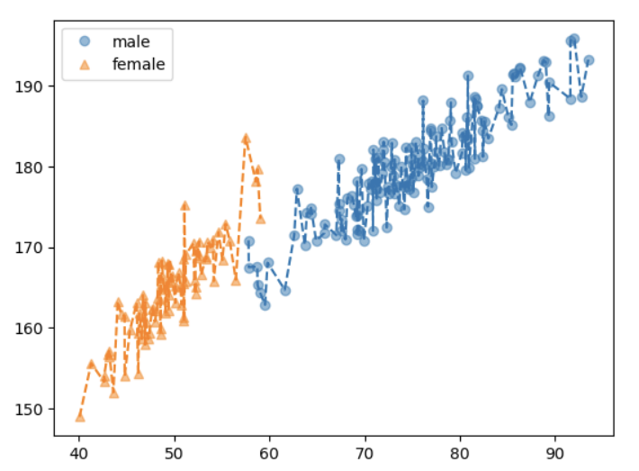

1. 강의영상
지금까지 했던 내용 추가해설.
2. 타이타닉 데이터에 대한 이해
ref: https://guebin.github.io/STBDA2023/posts/01wk-002.html
- 두 변수 sibsp와 parch를 합쳐 family_size라는 하나의 변수를 만들고, 이를 활용하여 y를 예측할 수 있다.
sibsp 와 parch 를 더하여 새로운 변수를 만든다면, 이후에는 sibsp와 parch 둘중 하나를 제거하나 둘다 제거하는 방법을 고려해야 한다.
- embarked와 class에 대한 피처엔지니어링 아이디어
embarked와 calss를 독립적으로 생각하는 것보다 둘을 합친 변수가 훨씬 유의미할 수 있을 수 있겠다는 아이디어. (경우에 따라 특정 국적의 1등급 손님이 구명보트를 많이 얻었을 수도 있으니까) –> 쉽게말해 교호작용을 고려한다는 얘기.
그냥 교호작용 고려한다는 소리죠? –> 트리계열은 결과가 크게 좋아질 것이라 기대하기 어렵겠고, 선형모형계열로 적합한다면 결과가 좋아질 수도 있겠음.
선형모델을 적합하는 상황을 가정하자. 교호작용의 효과가 있는 자료에서, 이를 무시하고 적합한다면 (“embarked” 변수와 “pclass” 변수만 넣고 적합한다면) 언더핏이 생김.
3. 아이스크림/회귀분석
ref: https://guebin.github.io/STBDA2023/posts/03wk-009.html
오버피팅: 랜덤으로 뭐가 나올지 맞춘다는 것은 오차항을 적합하겠다는 의미임.

오차항을 적합하는 것은 오버피팅. 적합된 것을 보고 적당 선에서 잘 끊어야 한다.
4. 타이타닉/로지스틱
ref: https://guebin.github.io/STBDA2023/posts/03wk-013.html
엄청 많은 범주가 있는 변수를 원핫인코딩 하게 되면 열이 엄청나게 많아지게 된다. 이러한 열들은 당연히 y와 직접적인 상관관계는 없게 나올것이다. 즉, 쓸모없는 변수들이 많아지는 상황이 되는데 이는 모듈21에서 소개한 변수들을 증가시킨 예제와 비슷한 상황이다.
5. 취업(다중공선성) / 다중공선성의 개념
Predictor 가 언더라잉이 아니라 오차항을 적합하고 있는 상황.
- 규칙을 찾으면 안될 것 – 오차항
- 규칙을 찾고 있음 – 오차항을 적합하고 있음.
- 쓸모없는 변수란 느낌이 드는 경우?
- 경우1: 진짜 쓸모없는 거.. (X1=부먹/찍먹, X2=민초/민초X) \(\to\) 애초에
X1,X2를 보고 y를 맞출 생각이 들지 않아. - 경우2: 실제론 쓸모있는데, 대체자가 있는 경우. (X1=toeic, X2=유사toeic) \(\to\)
X1을 보고y를 맞출 것 같은 생각이 들어, 그리고X2를 보고y를 맞출 것 같은 생각도 들어. 그런데X1이랑X2는 너무 비슷해.
- 경우1,2는 모듈28에서 소개한 것 처럼 히트맵을 그려서 파악할 수 있다.
- 경우1은 corr(y,X1), corr(y,X2) 의 값이 낮게 나온다.
- 경우2는 corr(y,X1), corr(y,X2) 의 값이 높게 나온다. 하지만 corr(X1,X2)의 값도 높게 나온다.
6. 체중감량(교호작용) / 회귀분석
ref: https://guebin.github.io/STBDA2023/posts/07wk-029.html
만약에 운동을 안하고, 약만먹을 경우 부작용이 생긴다면? (이것도 교호작용의 일종)
- 이러한 경우 위의 모형으로 단순적합하기 어렵다. (위의 모형은 “운동O/약O”인 case에서 발생하는 효과만 고려되도록 설계되어 있음.)
- 따라서 이럴 경우 차라리 (운동, 약)을 결합하여 새로운 범주형 변수를 만들고, 그 변수에서 원핫인코딩을 하는게 좋다. (마지막 더미변수는 제외하는 것이 좋지만, 파이썬에서는 제외하지 않아도 큰일나는 것은 아님.)
- 사실 (운동, 약)을 결합하여 모든 새로운 범주를 만들고 이 중 필요없는 범주를 또 다시 제거해야하는 과정도 분석에 포함되어야 한다. (p-value를 보면서 뺄 수도 있고 다른 방법을 쓸 수도 있고..)
- 그런데 범주형 변수가 3개라면? –> 솔직히 이것저것 생각하기 귀찮으니까 이럴때는 “트리모형”계열을 사용하는게 속편하다. (아니면 교호작용이 없길 기도하거나..)